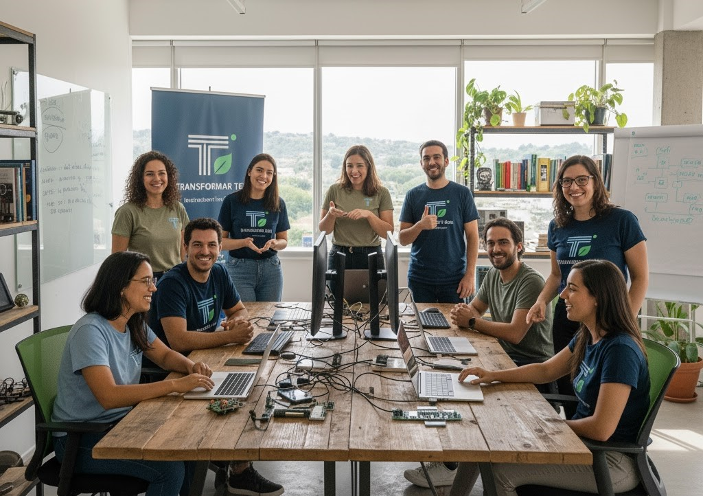

Missão
Promover a inclusão digital e a transformação social por meio da tecnologia.
TransformaTech nasceu com o objetivo de democratizar o acesso à tecnologia e promover a inclusão digital.
Nossa equipe é formada por voluntários apaixonados por tecnologia, educação e impacto social.
Promover a inclusão digital e a transformação social por meio da tecnologia.
Ser referência em inclusão digital no Brasil.
Solidariedade, acesso igualitário, sustentabilidade e inovação.